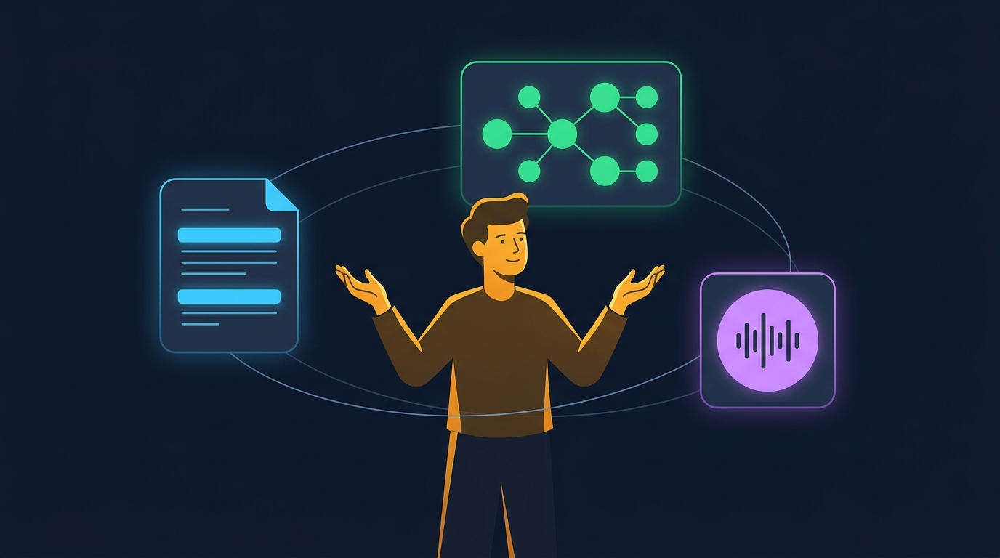
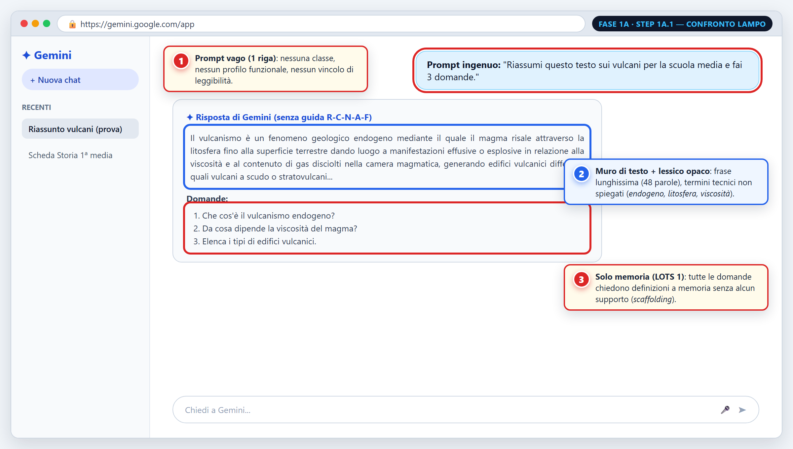
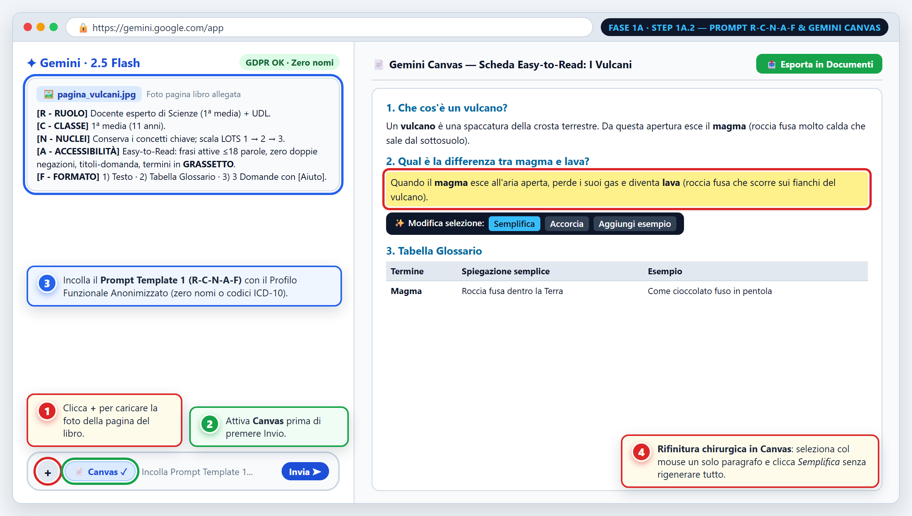
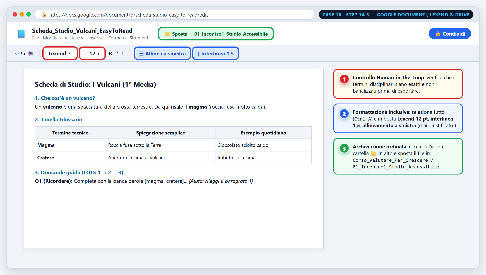

VALUTARE PER CRESCERE
Valutare con l'IA: verifiche accessibili e personalizzate nella Secondaria

🎯 Focus dell'Incontro 1 (4 ore = 4/20 del corso)
Accessibilità, autonomia e studio degli studenti:
- Scoprire i nuovi modelli di Google Gemini (Multimodalità, Flash vs Thinking, Canvas e Gem).
- Strutturare il Prompt in 5 Punti (R-C-N-A-F) per accompagnare lo studio sulla scala LOTS → HOTS.
- Applicare il Protocollo Privacy / GDPR (Profilo Funzionale Anonimizzato + 4 strumenti locali per il PC personale).
- Usare Gemini e Google NotebookLM (Mappe Mentali + Audio Overview) per creare il tuo Pacchetto di Studio Accessibile (Lavoro 1).
⏱️ Scansione Ergonomica delle 4 Ore
| Orario relativo | Fase |
|---|---|
00:00 – 01:50 | 🟢 Blocco 1 (110' · 2h nom.) · Nuovi modelli Gemini, barriere allo studio, Prompt R-C-N-A-F, Privacy/GDPR, Demo Gemini e Lavoro 1 · Fase 1A (30') |
01:50 – 02:10 | ☕ PAUSA CENTRALE (20 min) |
02:10 – 04:00 | 🔵 Blocco 2 (110' · 2h nom.) · Google NotebookLM (Mappe Mentali + Audio Overview), Lavoro 1 · Fase 1B (45') e Galleria tra pari (30') |
Setup Operativo sul tuo Google Drive
📁 1. Crea la tua Cartella per i 5 Giorni
- Accedi a Chrome con il tuo account Google Workspace for Education.
- Apri Google Drive e crea la cartella principale:
Corso_Valutare_Per_Crescere - Crea all'interno le 5 sottocartelle (una per ciascun incontro da 4 ore):
01_Incontro1_Studio_Accessibile(Oggi!)02_Incontro2_Verifica_UDL_Multilivello03_Incontro3_Rubrica_KSM_e_Feedback04_Incontro4_Banca_Quesiti_e_Quiz_Digitale05_Incontro5_Verifica_Multimodale_e_Kit_Finale
🌐 2. Apri i 2 Strumenti IA di Oggi
- Scheda 1: Google Gemini →
gemini.google.com - Scheda 2: Google NotebookLM →
notebooklm.google
Il Filo Rosso: 5 Lavori in Aula → 1 Kit Pronto per la Classe
Scegli oggi un argomento reale della tua disciplina: in ciascuna delle 5 giornate costruirai un tassello del tuo Kit Valutativo Inclusivo.
| Giornata (4h) | Moduli del Corso (20/20) | Lavoro Pratico della Giornata |
|---|---|---|
| 🟢 Incontro 1 (4h) | Accessibilità, autonomia e studio degli studenti (4/20) |
Lavoro 1 (Fase 1A + 1B): Scheda Easy-to-Read (Gemini) + Mappa Mentale & Audio Overview (NotebookLM) |
| 🔵 Incontro 2 (4h) | VerifichIAmo con l'IA — Parte I (4h su 10/20) |
Lavoro 2 (Fase 2A + 2B): Radiografia verifica + Verifica UDL a 3 Livelli (LOTS → HOTS) & Gem |
| 🟣 Incontro 3 (4h) | VerifichIAmo con l'IA — Parte II (4h su 10/20) |
Lavoro 3 (Fase 3A + 3B): Rubrica KSM in Fogli + Autovalutazione + Feedback Formativo & Recupero |
| 🟠 Incontro 4 (4h) | Area 1 Domande con IA (2/20) + Area 2 Quiz Digitali (2/20) |
Lavoro 4 (Fase 4A + 4B): Banca Quesiti in Fogli + Google Modulo Quiz con Feedback e Ramificazione |
| 🟡 Incontro 5 (4h) | Area 3 Video/Materiali (2/20) + VerifichIAmo Parte III (2h su 10/20) |
Lavoro 5 (Fase 5A + 5B): Verifica Multimodale su Video/Materiali + Orchestrazione e Peer-Review del Kit |
Cosa Cambia con i Nuovi Modelli di Google Gemini?
| Nuova Funzionalità | Cosa significa sul piano tecnico | Vantaggio pratico per il docente di Scuola Media |
|---|---|---|
| 📸 1. Multimodalità Nativa | Elabora contemporaneamente testo, foto, schemi, grafici e PDF in un'unica ampia finestra di contesto. | Fotografi la pagina del libro cartaceo o una vecchia verifica stampata e la trasformi subito senza ricopiare nulla. |
| 🧠 2. Modelli Rapidi (Flash) vs Ragionamento (Thinking) | I modelli Thinking eseguono una catena di pensiero (Chain-of-Thought) verificando vincoli e calcoli prima di rispondere. | Usi Flash per glossari e testi ad alta leggibilità; usi Thinking per problemi di Matematica, verifiche LOTS→HOTS e "Caccia all'errore". |
| ✍️ 3. Gemini Canvas & Gem | Area di editing affiancata (Canvas) e assistenti pre-istruiti salvabili (Gem). | Selezioni col mouse solo 3 righe troppo difficili e le semplifichi al volo; salvi le regole della tua materia in un Gem. |
| 📄 4. Esportazione 1-Clic in Workspace | Ponte nativo tra Gemini, Google Documenti e Google Fogli. | Nessun copia-incolla manuale che perde la formattazione delle tabelle o delle griglie. |
Abbattere le Barriere Strumentali senza Abbassare la Dignità Cognitiva
🚧 Cosa blocca lo studio autonomo a casa?
- DSA (L. 170/2010): affaticamento nella decodifica visiva e saturazione della memoria di lavoro su periodi lunghi.
- NAI / Italiano L2: competenza cognitiva integra, ma blocco sulla lingua astratta dello studio (passivi, subordinate, lessico tecnico non spiegato).
- Disabilità (L. 104/92) e FIL: bisogno di ancoraggi concreti, esempi quotidiani e passaggi guidati.
- ADHD / Funzioni Esecutive: smarrimento davanti al "muro di testo" privo di micro-obiettivi visivi.
💡 La Risposta UDL + IA
- Ridurre il Carico Cognitivo Estraneo (font, sintassi contorta, impaginazione confusa) per liberare energie sul Carico Pertinente (capire e ragionare).
- Molteplici canali (UDL): Testo Easy-to-Read + Mappa Mentale visiva + Audio Overview parlato.
- Scaffolding: fornire la "rampa di accesso" (banca parole, esempio svolto, suggerimento) per far salire tutti verso il ragionamento!
Perché "Studiare solo a Memoria" (LOTS 1) Penalizza i Più Fragili
| Fascia | Processo Cognitivo | Cosa fa l'IA se NON la guidiamo | Come istruiamo Gemini (Scaffolding Inclusivo) |
|---|---|---|---|
| LOTS | 1. Ricordare [A1, B1] |
❌ Genera 80% di domande mnemoniche (date, elenchi a vuoto). | ✅ Banche di parole, immagini etichettate, abbinamenti guidati. |
| LOTS | 2. Comprendere [A2, B2] |
❌ Riassunti generici che tagliano i nessi causa-effetto. | ✅ Testi Easy-to-Read, metafore concrete, spiegazioni dialogate. |
| Ponte | 3. Applicare [C3] |
❌ Esercizi privi di guida procedurale. | ✅ Procedura spezzettata Passo 1 / Passo 2 + 1° esercizio già svolto. |
| HOTS | 4. Analizzare · 5. Valutare · 6. Creare | ❌ Esclude gli HOTS dalle versioni facilitate! | ✅ Tabelle comparative semicompilate + "Caccia all'errore" con frasi-avvio. |
Governare Gemini fin dal Giorno 1: Il Prompt in 5 Punti (R-C-N-A-F)
| Codice | Blocco del Prompt | Formula Operativa da usare su Gemini |
|---|---|---|
| [R] | RUOLO | "Agisci come docente esperto di [Materia] nella Scuola Secondaria di I grado e specialista in didattica inclusiva UDL..." |
| [C] | CLASSE | "Classe [1ª/2ª/3ª] media (studenti di [11/12/13] anni)..." |
| [N] | NUCLEI E SCALA LOTS → HOTS | "Conserva questi nuclei fondanti [...] e accompagna lo studente dal Ricordare [A1] al Comprendere le relazioni [B2] e all'Applicare [C3]..." |
| [A] | ACCESSIBILITÀ (Profilo Anonimo) | "Regole Easy-to-Read: frasi attive di max 15-18 parole, zero doppie negazioni, paragrafi con titolo-domanda, termini tecnici in GRASSETTO..." |
| [F] | FORMATO DI OUTPUT | "Restituisci: 1) Testo adattato; 2) Tabella Glossario con esempi; 3) 3 domande-guida con suggerimento [Aiuto: ...] pronte per Esporta in Documenti." |
Privacy e IA a Scuola: Il Profilo Funzionale Anonimizzato
| ❌ Prompt VIETATO (Viola il GDPR) | ✅ Prompt CORRETTO (Profilo Funzionale Anonimizzato) |
|---|---|
| "Adatta questa pagina per Luca Bianchi della 1ª C che ha dislessia severa F81.0 e ADHD come da PDP..." | "Adatta questo testo per una 1ª media includendo accorgimenti per studenti con affaticamento nella decodifica della lettura e tempi brevi di attenzione: usa paragrafi di max 4 righe con titolo-domanda, frasi attive sotto le 16 parole e parole chiave in grassetto." |
| "Ecco il PEI di Sofia (L. 104 disabilità intellettiva lieve), falle una scheda di scienze..." | "Progetta una scheda per obiettivi minimi focalizzata sui 3 nuclei essenziali: usa frasi lineari Soggetto-Verbo-Complemento, collega ogni concetto a un esempio concreto quotidiano e inserisci 3 domande a scelta guidata con suggerimento." |
| "Fai una scheda per Youssef arrivato dall'Egitto un mese fa..." | "Adatta questa scheda per studenti di 12 anni con alta competenza cognitiva ma Italiano L2 a livello A1/A2: usa verbi al presente, lessico ad alta frequenza e spiega i 5 termini tecnici in un glossario semplice." |
4 Strumenti Locali Gratuiti per la Privacy sul tuo PC Personale
🛡️ 1. PDF24 Creator (Windows · Offline)
Funzione "Oscura PDF": distrugge fisicamente nomi e dati sensibili da un PDF prima di usarlo. Funzione "Estrai pagine" per isolare 1 pagina da caricare in Gemini senza usare siti web esterni.
🤖 2. LM Studio / GPT4All (IA 100% Offline)
Esegue modelli IA compatti (es. Gemma 3, Qwen 2.5, Llama 3.2) direttamente sulla memoria del tuo PC personale anche con il Wi-Fi spento. Zero dati inviati nel cloud.
🧩 3. Lumi Education (H5P Desktop)
Crea sul tuo PC video interattivi, cloze e flashcard ed esporta tutto in un singolo file .html da caricare su Google Classroom (zero account per gli studenti!).
📝 4. LibreOffice (Metadati & PDF/UA)
Pulizia in 1 clic dei metadati autore ed esportazione in PDF/UA accessibile per le sintesi vocali (TTS) usate dagli studenti con DSA o disabilità visiva.
Dalla Foto del Libro alla Scheda Easy-to-Read in Gemini Canvas
🔥 Confronto Lampo
Scegli un tuo testo (o dal Kit Campione) e lancia un prompt ingenuo di 1 riga su gemini.google.com per osservarne i limiti.
⚡ Prompt R-C-N-A-F & Canvas
Usa il Profilo Funzionale Anonimizzato, carica foto/testo con il Prompt Template 1 e rifinisci un paragrafo in Gemini Canvas.
✅ Validazione, Lexend & Drive
Controlla i nuclei (Human-in-the-Loop), clicca Esporta in Documenti, imposta Lexend 12 pt (1,5 · sinistra) e salva in Drive.
📋 Prompt Template 1 — Struttura R-C-N-A-F (pronto da copiare in Step 1A.2)
🔥 Step 1A.1 — Riscaldamento "Confronto Lampo"
- Scegli il testo di partenza: prendi una pagina del tuo libro di testo o una breve dispensa disciplinare (1ª, 2ª o 3ª media) su cui lavorerai lungo tutti e 5 gli incontri. Se non hai un testo pronto, usa uno dei 4 brani del Kit Materiali Campione ↗.
- Apri Google Gemini: collegati a gemini.google.com ↗ con il tuo account Google.
- Lancia un prompt ingenuo di 1 riga: clicca "+ Nuova chat", incolla il testo e scrivi una richiesta generica (es. "Riassumi questo testo per la scuola media e fai 3 domande").
- Osserva i 3 limiti tipici in 30 secondi: muro di testo continuo, lessico tecnico non spiegato (o eliminato) e domande solo mnemoniche (
LOTS 1) prive di aiuti.

Esc o clicca fuori per chiudere
⚡ Step 1A.2 — Prompt R-C-N-A-F, Upload Multimodale e Gemini Canvas
- Scegli il Profilo Funzionale Anonimizzato (GDPR): apri la Parte 2 del Kit Privacy GDPR ↗ e verifica di non inserire mai nomi, classi identificabili o codici diagnostici (es. ICD-10).
- Apri una nuova chat pulita su
gemini.google.com("+ Nuova chat") per evitare interferenze dalla prova precedente. - Scegli il tuo binario operativo:
Incolla direttamente il Prompt Template 1 (
R-C-N-A-F) seguito dal testo di partenza e premi Invia.
Clicca
+ per allegare la foto/PDF della pagina del libro, attiva il pulsante Canvas, incolla il Prompt Template 1 e invia.
- Rifinitura chirurgica in Canvas: nel pannello laterale destro seleziona col mouse una singola frase ancora densa e clicca sugli strumenti rapidi ("Semplifica" o "Accorcia") senza rigenerare tutta la scheda.

✅ Step 1A.3 — Validazione, Esportazione in Documenti, Lexend & Drive
- Validazione Human-in-the-Loop: rileggi la scheda generata e controlla che i nuclei disciplinari siano esatti, privi di allucinazioni e con i termini tecnici conservati e spiegati bene.
- Esporta in 1 clic: clicca su "Esporta in Documenti" (in alto a destra in Canvas o sotto la risposta in chat) per creare il file in Google Documenti.
- Imposta l'alta leggibilità: premi
Ctrl + A(oCmd + Asu Mac) e applica font Lexend (o Atkinson Hyperlegible), dimensione12 pt, interlinea1,5e allineamento a sinistra (mai giustificato!). - Rinomina e archivia su Drive: dai un nome chiaro al file (es.
Scheda_Studio_[Argomento]_EasyToRead), clicca l'icona cartella 📁 Sposta accanto al titolo e salvalo inCorso_Valutare_Per_Crescere / 01_Incontro1_Studio_Accessibile.

☕ PAUSA CENTRALE — 20 Minuti
Sgranchiamoci le gambe e prendiamo un caffè.
Al rientro (02:10): Google NotebookLM (Mappe Mentali + Audio Overview) e Lavoro Pratico 1 · Fase 1B (45')!
02:10 – 04:00) · Demo Live 2 (notebooklm.google)Google NotebookLM: L'IA Ancorata al 100% alle Fonti del Docente
🔒 1. Grounding & Citazioni
Carichi i tuoi PDF, Google Docs, Slide e link YouTube. NotebookLM risponde solo usando i tuoi materiali e inserisce i numerini cliccabili che rimandano alla riga esatta della fonte.
🗺️ 2. Mappe Mentali Automatiche
Con 1 clic nel pannello Studio genera una Mappa Mentale interattiva ad albero: puoi espandere i rami e scaricarla come immagine PNG da inserire nella scheda!
🎧 3. Audio Overview
Genera un dialogo audio a due voci in italiano che spiega la tua lezione! Straordinario per il ripasso a casa degli alunni con dislessia o fatica di lettura.
6 Esempi Già Pronti per il Lavoro Pratico di Oggi
📘 #01 Italiano (1ª) ↗
Foto pagina antologia (Ulisse e Polifemo) → Easy-to-Read in 3 scene in Gemini Canvas per alunni con dislessia.
📘 #02 Italiano L2 (2ª) ↗
Testo storico-letterario → Mappa testuale e glossario ad alta frequenza per alunni NAI + Audio Overview.
📐 #07 Matematica (1ª) ↗
Foto esercizi sulle Frazioni → Ricetta procedurale Passo 1 / Passo 2 con esercizio-modello svolto per discalculia.
🇬🇧 #11 Inglese (1ª) ↗
Reading graduata su Daily Routine con Word Bank fonetica e verbi in grassetto per DSA.
🌍 #16 Geografia (1ª) ↗
Gemini Multimodale su carta fisica/climatica → Guida in 3 mosse alla lettura della carta + glossario.
🔬 #18 Scienze (1ª) ↗
NotebookLM su La Cellula → Mappa Mentale + Audio Overview + metafora della fabbrica ecologica.
02:45 – 03:30 (45 Minuti · 4 Micro-Step in Ordine Anti-Attesa)🛠️ LAVORO PRATICO 1 · FASE 1B: Completa il Pacchetto su NotebookLM
🚀 Step 1B.1 (5') & Step 1B.2 (15')
- Step 1B.1 (5') — Avvia SUBITO l'Audio Overview: apri
notebooklm.google, carica il tuo Doc Google della Fase 1A (+ un video YouTube per Approfondimento) e avvia in background "Audio Overview → Personalizza". - Step 1B.2 (15') — Mappa Mentale PNG: mentre l'audio elabora, clicca su "Mappa mentale", scarica il PNG e incollalo in cima al tuo Doc in
01_Incontro1_Studio_Accessibile.
🔍 Step 1B.3 (15') & Step 1B.4 (10')
- Step 1B.3 (15') — Grounding & Citazioni: chiedi in chat una tabella comparativa basata solo sulle fonti e clicca su almeno 2 citazioni numerate.
- Step 1B.4 (10') — Controllo & Salvataggio Audio: ascolta i primi 60 secondi dell'Audio Overview ormai pronto e salvalo nella cartella Drive
01_Incontro1_Studio_Accessibile.
03:30 – 03:50 · 20 min)Galleria Lampo e Confronto tra Dipartimenti
🔍 3 Esempi dal Vivo (Lettere, STEM, Lingue/Tecnico-Artistiche)
- Osserviamo insieme 3 pacchetti di studio appena creati dai colleghi.
- Notiamo come il testo Easy-to-Read + la Mappa Mentale di NotebookLM offrano due punti d'accesso complementari allo stesso contenuto.
💬 3 Domande di Debriefing
- Quale differenza avete notato tra un riassunto tradizionale e la scheda strutturata con il Prompt in 5 punti?
- In quale punto siete dovuti intervenire voi (Human-in-the-Loop) per correggere Gemini?
- Come userete la Mappa Mentale o l'Audio Overview con i vostri alunni BES/DSA/NAI?
30 Prompt Proporzionali alle Materie della Scuola Media
📘 Area Lettere (33,3%)
- Italiano: 6 esempi (
#01–#06) - Storia: 2 esempi (
#14–#15) - Geografia: 2 esempi (
#16–#17)
📐 Area STEM & Lingue (36,7%)
- Matematica: 4 esempi (
#07–#10) - Scienze: 2 esempi (
#18–#19) - Inglese: 3 esempi (
#11–#13) - 2ª Lingua (Fr/Sp): 2 esempi (
#20–#21)
🎨 Tecnico-Artistiche, Motorie, IRC (30%)
- Tecnologia: 2 esempi (
#22–#23) - Arte e Immagine: 2 esempi (
#24–#25) - Musica: 2 esempi (
#26–#27) - Ed. Fisica: 2 esempi (
#28–#29) - IRC / Ed. Civica: 1 esempio (
#30)
03:50 – 04:00) · Arrivederci all'Incontro 2!Checklist di Fine Giornata 1 & Anticipazione Giorno 2
✅ Verifica nella tua Cartella Google Drive
- ✔ Cartella
Corso_Valutare_Per_Crescere / 01_Incontro1_Studio_Accessibilecreata. - ✔ Documento Google con il tuo Pacchetto di Studio Accessibile (Lavoro 1) salvato.
- ✔ Mappa Mentale PNG e/o Audio Overview generati su NotebookLM.
- 🔒 Ricorda di effettuare il LOGOUT dal browser del laboratorio!
🚀 Cosa faremo nell'Incontro 2 di 5 (4 ore)
VerifichIAmo con l'IA — Parte I (4h):
- Dal Prompt di studio al Prompt di Verifica (
R-C-N-A-F); - Radiografia di una verifica reale con Gemini Multimodale;
- Progettazione della Verifica UDL su 3 Livelli (Facilitata/Equipollente, Standard, Potenziamento) con il modello di Ragionamento (Thinking), la scala LOTS → HOTS e la "Caccia all'errore";
- Creazione del tuo Gem disciplinare permanente.